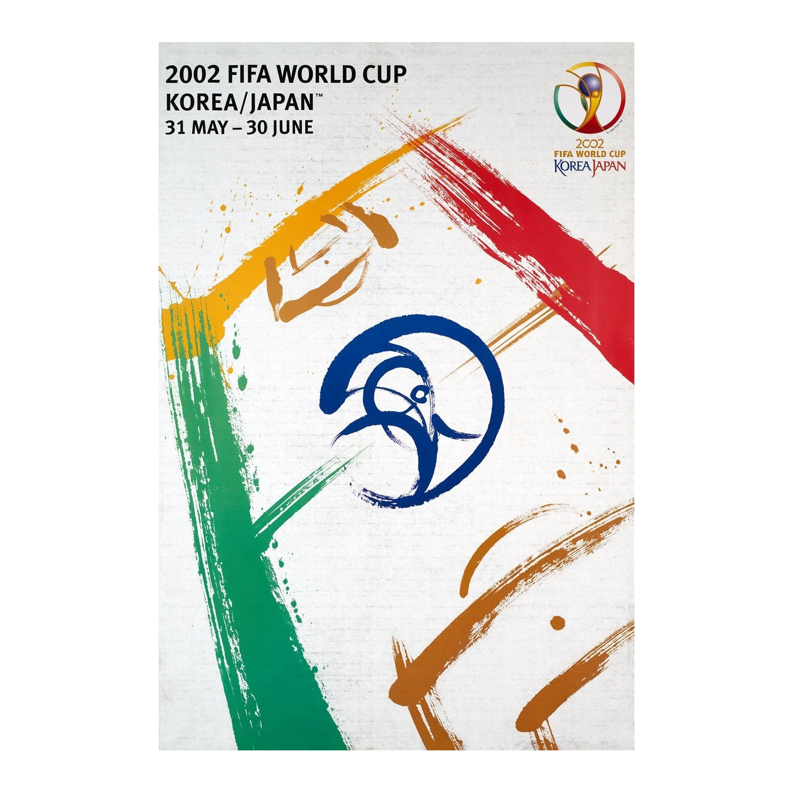
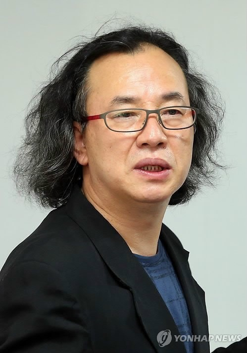

Official Poster
The official 2002 FIFA World Cup poster was a collaborative work created by two calligraphers, Byun Choo-suk from South Korea and Hirano Sogen from Japan.
Designed to represent the first World Cup co-hosted by two nations, the artwork features bold, calligraphic brushstrokes that form the shape of a football pitch. The two artists spent two days in a studio session together in June 2001, sharing paper and ink to blend their cultural styles into a single universal icon for the tournament.
The calligraphic lines represent "the pitch of dreams" and reflect values like speed, agility, and beauty inherent in football.
The final composition was created by scanning the best brushstrokes from their collaborative session and arranging them digitally.

Byun Choo-suk
Byun Choo-suk was the co-designer of the official 2002 FIFA World Cup poster, collaborating with Japanese artist Hirano Sogen.
An eminent calligrapher and branding expert whose work has been featured at the Art Directors Club in New York.
At the time, he was a professor at Kookmin University in South Korea.
Beyond the poster, he is a well-known figure in Korean visual design and later served as the president of the Korea Tourism Organization in 2014.

Hirano Sogen
Hirano Sogen (平野 壯弦) is a world-renowned Japanese master calligrapher and artist who gained international fame as the co-designer of the official 2002 FIFA World Cup poster.
He specializes in Shogei (calligraphy art), a style that blends traditional calligraphy techniques with modern visual expression.
He collaborated with South Korean designer Byun Choo-suk to create the tournament's official poster using calligraphic brush strokes to symbolize the unity of the two host nations.
His art focuses on the "essence of the stroke," often moving beyond standard black ink to incorporate materials like grass, twigs, and colored inks. He describes his process as seeking the "waves of life" through physical movement.
Hirano has performed and exhibited his work worldwide, including solo exhibitions in New York and appearances on major networks like CNN and KBS as a leading representative of 21st-century Asian art.
He has designed numerous logos and labels, most notably for the Akashi-Tai Sake brand.
He leads the Sogen Juku (ARC), a calligraphy school where he teaches students to pursue free expression through Shogei art.
He has produced monumental calligraphy for public facilities, such as the logo for the Hidamari Pool in Tokamachi City.